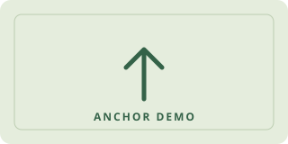

a · 링크 만들기
클릭할 글자나 이미지를 a 요소로 감싸고 href에 이동할 위치를 지정한다.
PERSONAL RESUME / 2026
페이지를 불러오는 중
WEEK 03 / ANCHOR LINKS
링크 주소와 이미지의 표현을 이해하고, 뉴스·웹툰 실습에서 id와 href로 문서 안의 원하는 위치를 연결한다.
‘문서 수정’을 누른 뒤 제목·본문·코드 예시를 클릭해 바꾸세요.
저장은 이 브라우저에만 적용됩니다. 제출 파일에 반영하려면 HTML을 내려받아 practice 폴더의 같은 이름 파일을 교체하세요.
클릭할 글자나 이미지를 a 요소로 감싸고 href에 이동할 위치를 지정한다.
같은 문서 안에서 이동할 요소에 고유한 id를 붙인다.
href="#up"은 현재 문서에서 id="up"인 요소를 찾아 이동한다.
LECTURE / HYPERTEXT & LINKS
Lec03 강의자료 2~4쪽
하이퍼텍스트는 관련 문서나 텍스트 조각을 링크로 연결한다. 하이퍼미디어는 텍스트뿐 아니라 이미지·그래픽·오디오·비디오 같은 정보까지 연결하는 개념이다. 링크를 선택해 정보 사이를 탐색하는 과정을 내비게이션이라고 한다.
| 개념 | 의미 | 실습에 적용하면 |
|---|---|---|
| 노드 | 문서나 멀티미디어 정보의 기본 단위 | 뉴스 문서, 웹툰 문서와 그 안의 정보 |
| 링크 | 노드를 연결해 탐색할 수 있게 하는 연결 | 본문 문구나 이미지를 눌러 이동하는 연결 |
| 앵커 | 링크의 출발점 또는 도착점 | 클릭할 a 요소와 id로 지정한 제목·이미지 |
<a href="week01.html" title="1주차 학습 정리">
1주차 페이지 읽기
</a>a 요소의 href는 이동할 위치를, 링크 안의 텍스트나 이미지는 클릭할 영역을 지정한다. title은 링크의 보조 설명으로 마우스를 올릴 때 표시될 수 있지만, 읽기 쉬운 링크 텍스트를 대신하지는 않는다.
LECTURE / URLS & BOOKMARKS
Lec03 강의자료 5~12쪽
| 방식 | href의 예 | 이동 위치 |
|---|---|---|
| 절대 주소 | https://www.w3.org/ | 전체 웹 주소로 지정한 외부 사이트 |
| 같은 폴더의 상대 주소 | week01.html | 현재 문서와 같은 practice 폴더의 1주차 문서 |
| 상위 폴더의 상대 주소 | ../index.html | 상위 폴더의 이력서 문서 |
| 현재 문서의 위치 | #news-case | 현재 문서에서 id="news-case"인 영역 |
| 다른 문서의 특정 위치 | week01.html#html-history | 1주차 문서에서 id="html-history"인 영역 |
상대 주소는 현재 문서의 위치를 기준으로 해석한다. 문서를 다른 폴더로 옮기면 같은 상대 주소가 다른 파일을 가리킬 수 있다. 단순히 href를 빈 값으로 두는 대신 목적지 경로를 분명히 작성한다.
<!-- 링크의 시작점 -->
<a href="#book001">첫 번째 참고도서 소개</a>
<!-- 도착점: id에는 #을 붙이지 않는다 -->
<section id="book001">
<h3>첫 번째 참고도서</h3>
<p>도서의 설명을 작성합니다.</p>
</section>자료에서는 a id="book001" 같은 빈 앵커로 도착점을 지정한다. 목적지를 a에만 설정할 필요는 없으며 section·제목·span·img 같은 요소에 고유한 id를 지정할 수도 있다. 이것이 뉴스의 span id="up"과 웹툰의 img id="up"으로 이어진다.
자료의 스마트 따옴표는 코드용 따옴표로 바꾸고, br은 종료 태그 없이 쓴다. ol 안의 항목은 li로 감싸며, 표의 테두리와 위치 같은 표현은 외부 CSS로 분리한다.
LECTURE / IMAGES & CAPTIONS
Lec03 강의자료 13~19쪽
| 형식 | 특징 | 자료에서 이해할 점 |
|---|---|---|
| GIF | 팔레트 기반으로 제한된 색상을 표현 | 일반적으로 최대 256색 팔레트를 사용하며 단순한 그림과 색이 적은 이미지에 활용된다. |
| JPEG | 사진처럼 색상 변화가 많은 이미지에 활용 | 보통 손실 압축을 사용하며 품질 설정과 파일 크기를 함께 살펴본다. |
| PNG | 무손실 압축과 투명도 지원 | 도형·문자·투명 배경 이미지에 활용된다. 비압축 형식이라고 이해하지 않는다. |
자료 14쪽의 압축률은 두 예제 이미지의 비교 결과다. GIF가 언제나 가장 작거나 PNG가 항상 더 크다고 일반화하지 않는다. 실제 크기는 이미지의 내용·해상도·색상·압축 설정에 따라 달라진다.
PNG의 무손실 압축과 알파 채널 확인: W3C PNG 규격
<img src="anchor-panel.svg"
width="320" height="160"
alt="문서 내 이동 실습을 설명하는 그림">| 속성 | 역할 |
|---|---|
| src | 이미지의 파일 이름 또는 경로를 지정한다. 상대 경로라면 현재 문서를 기준으로 찾는다. |
| width / height | 이미지의 표시 크기와 비율을 지정한다. 반응형 화면에서는 CSS와 함께 조정한다. |
| alt | 이미지 대신 전달할 내용을 설명한다. 로드 실패와 비시각적 이용을 함께 고려한다. |
클릭하는 이미지의 alt는 이동 기능이나 목적지를 이해할 수 있게 작성한다. 이미지의 정렬은 오래된 align 속성보다 CSS로 표현하며, 너비와 높이를 임의로 바꿔 비율이 찌그러지지 않게 한다.
figure는 그림·사진·다이어그램 등 독립적으로 설명할 콘텐츠를 묶고, figcaption은 그 콘텐츠의 설명을 같은 figure 안에 작성한다. 이미지를 a로 감싸면 그림 전체가 링크의 클릭 영역이 된다.
<figure>
<a href="#webtoon-case">
<img src="anchor-panel.svg" width="320" height="160"
alt="웹툰 이미지 링크 실습으로 이동">
</a>
<figcaption>이미지를 누르면 웹툰 실습으로 이동합니다.</figcaption>
</figure>
자료 19쪽의 figcation은 figcaption으로 고쳐 작성한다. 이 예제에서는 설명을 a 밖의 figure 자식으로 두어 그림·링크·설명의 구조를 분명히 했다. 실제 책 표지나 웹툰 장면을 복제하지 않고 기존 학습용 그림을 사용했다.
구조와 대체 텍스트 확인: WHATWG figure · WHATWG img
01 / PRACTICE LOG
3주차에는 저장한 네이버 뉴스 기사와 웹툰 페이지의 HTML을 열어 문서 내 위치 이동을 실습했다. 본문이나 아래쪽 이미지를 클릭하면 상단에 지정한 위치로 올라가도록 링크와 도착점을 연결했다.
| 대상 | 도착점 | 클릭할 링크 | 소스 확인 |
|---|---|---|---|
| 뉴스 기사 | 기사 제목 안의 span에 id="up" | 기사 본문의 특정 문구를 a href="#up"으로 감쌈 | 제목 979행, 본문 1134행 |
| 웹툰 1화 | 본문 상단의 연령 안내 이미지에 id="up" | 아래쪽 마지막 이미지를 a href="#up"으로 감쌈 | 상단 559행, 아래쪽 724행 |
각 저장 문서에는 id="up"인 요소와 href="#up"인 링크가 각각 하나씩 있었다. 기사와 웹툰은 서로 다른 문서이므로 같은 id 이름을 사용할 수 있다. 한 문서 안에서는 id를 중복해서 쓰지 않는다.
자료: 제공한 뉴스·웹툰 ZIP 및 세 장의 코드 캡처. 행 번호는 첨부 ZIP 안의 최상위 HTML 기준이며 파일을 수정하면 달라질 수 있다.
02 / FRAGMENT LINKS
<span id="up">기사 제목</span>id는 이동할 요소의 식별자다. id 값에는 #을 붙이지 않는다.
<a href="#up">위로 이동</a>href의 # 뒤에 도착점의 id를 적는다. up이라는 이름이 서로 같아야 한다.
up은 개발자가 정한 이름이다. 요소가 위쪽에 있으면 위로 이동하고, 아래쪽에 있으면 아래로 이동한다. up 대신 summary나 chapter-1을 써도 링크와 id가 일치하면 같은 원리로 동작한다.
id="up"은 반드시 페이지의 스크롤 위치 0을 뜻하지 않는다. 뉴스 실습에서는 기사 제목, 웹툰 실습에서는 상단 안내 이미지가 도착점이다. 이름이 없는 링크나 도착점이 없는 링크는 의도한 위치로 이동할 수 없다.
03 / NEWS PAGE
첨부 사진은 본문의 문구를 a로 감싼 단계, href="#up"을 추가한 단계, 제목에 span id="up"을 둔 단계를 보여 준다. ZIP의 저장 HTML에서도 이 연결이 확인된다.
<h2 id="title_area">
<span id="up" class="up_class">기사 제목</span>
</h2><a>기사 본문의 특정 문구</a>
<!-- 이동할 위치를 지정한 실습 코드 -->
<a href="#up">기사 본문의 특정 문구</a>href가 없는 a 요소에는 이동할 위치가 없다. class="up_class"는 스타일 등에 사용할 수 있는 클래스 이름이고, 문서 내 이동의 도착점은 id="up"이 결정한다. 위 코드는 긴 기사 제목과 본문을 설명용 문구로 줄였으며 링크와 id 구조는 제공 자료와 같다.
이곳이 id="up"인 도착점이다. 아래의 본문 링크를 누르면 이 제목으로 이동한다.
긴 기사를 읽다가 앞의 제목을 다시 확인하고 싶은 상황을 생각해 볼 수 있다.
실습에서는 이동 기능을 만들 문구를 a 요소로 감싸고 href에 #up을 지정했다.
아래 버튼은 같은 원리를 확인하기 위한 재구성 예제다. 원본 기사 본문을 복사한 것은 아니다.
04 / WEBTOON PAGE
웹툰 저장 HTML은 상단의 연령 안내 이미지에 id="up"을 추가하고, 아래쪽 마지막 콘텐츠 이미지를 a href="#up"으로 감싼 형태다. 글자뿐 아니라 이미지 전체도 링크의 클릭 영역이 될 수 있다.
<!-- 상단의 도착점 이미지: 실제 자료는 연령 안내 이미지 -->
<img src="상단안내이미지.jpg" alt="연령 안내" id="up">
<!-- 아래쪽 이미지 클릭 → 상단 이미지로 이동 -->
<a href="#up">
<img src="마지막이미지.jpg" alt="위로 이동할 웹툰 이미지">
</a>이미지 경로와 alt 문구는 설명하기 쉽게 바꿨다. 저장본에서는 마지막 이미지의 id가 content_image_80이었다. 실제 실습의 이동 목표는 상단의 id="up"인 이미지다.
이 페이지 안에서는 뉴스 예제의 up과 겹치지 않도록 이미지의 id를 toon-up으로 구분했다.
상단 이미지가 도착점이다.
중간 장면을 지나 아래쪽으로 읽어 내려오는 상황을 재구성했다.
아래 이미지는 실제 웹툰 장면이 아니라 링크 원리를 설명하는 학습용 그림이다.
아래 이미지를 누르면 위의 이미지로 이동한다.
05 / TOP BUTTON IMPLEMENTATIONS
저장한 페이지에는 직접 추가한 #up 링크와 별도로 원래의 ‘맨위로’ 컨트롤도 남아 있다. 두 종류의 코드를 구분해 확인했다.
| 구분 | 확인한 코드 | 이동 기준 |
|---|---|---|
| 실습에서 추가한 링크 | a href="#up"과 id="up" | 이름으로 지정한 요소의 위치 |
| 뉴스의 원래 맨위로 | goTop / _MOVE_TOP 클릭 → moveTop() → window.scrollTo(0, 0) | 페이지 좌표의 맨 위 |
| 웹툰의 원래 맨위로 | .up_down_area .link_top 클릭 → window.scrollTo(0, 0) | 페이지 좌표의 맨 위 |
// 저장된 뉴스·웹툰 스크립트에서 확인한 핵심 동작
window.scrollTo(0, 0);
// 직접 추가한 HTML 앵커 링크는 id가 있는 요소로 이동
// <a href="#up">위로 이동</a>뉴스의 read.min.js는 _MOVE_TOP 클릭에서 기본 링크 동작을 막고 moveTop()을 호출한다. 그 함수 안에서 window.scrollTo(0, 0)이 실행된다. 웹툰의 detail-scrolltoon 스크립트도 맨위로 버튼의 클릭 이벤트에서 같은 좌표 이동을 호출한다. HTML의 버튼 모양이나 onclick의 문자열만 보고 동작 전체를 판단하지 않고 연결된 스크립트까지 확인했다.
이 학습 페이지에는 외부 CSS의 scroll-behavior: smooth가 적용되어 앵커 이동이 부드럽게 보인다. 이는 #up의 의미 자체와는 별개다. 동작 줄이기를 요청한 환경에서는 기존 설정대로 즉시 이동한다.
html { scroll-behavior: smooth; }
@media (prefers-reduced-motion: reduce) {
html { scroll-behavior: auto; }
}06 / WHAT I PRACTISED
07 / QUICK REVIEW
절대 주소는 전체 주소를 지정한다. 상대 주소는 현재 문서의 위치를 기준으로 파일이나 경로를 찾는다.
alt는 이미지 대신 전달할 내용을 나타낸다. title은 보조 설명이며 읽기 쉬운 링크 텍스트나 이미지의 대체 텍스트를 대신하지 않는다.
figure 안에서 콘텐츠의 설명으로 작성한다. 이미지 링크는 a가 img를 감싸도록 하고 설명은 같은 figure 안에 배치한다.
id="up"으로 쓰고, 이동할 링크에서 href="#up"으로 쓴다.
href로 이동할 대상을 지정해야 한다. href 없는 a에는 이 실습의 이동 주소가 없다.
개발자가 정한 id 이름이다. id="up"인 요소가 실제로 놓인 위치로 이동한다.
a href="#up" 안에 img를 넣으면 이미지가 링크의 클릭 영역이 된다.
전자는 이름으로 지정한 요소를 찾고, 후자는 페이지의 좌표로 이동한다. 목표 요소가 중간에 있으면 도착 위치가 다를 수 있다.
추가 강의자료: 「[웹프로그래밍] Lec03. 링크와 멀티미디어」 PDF 2~19쪽. 20쪽 이후의 오디오·비디오 내용은 이번 추가 범위에 포함하지 않았다.
제공한 뉴스 기사 ZIP과 「헤어지기 싫어! - 1화 | 네이버 웹툰」 ZIP의 최상위 HTML, 관련 로컬 JavaScript, a 요소·href="#up"·span id="up"의 코드 캡처 3장을 확인했다.
저장본은 수정한 실습 파일을 분석한 결과이며, 현재 네이버 서비스 전체의 구현을 일반화한 설명은 아니다. 원본 기사·웹툰 전체, 웹툰 장면 이미지와 광고·추적 스크립트는 이 학습 페이지나 제출 ZIP에 복제하지 않았다. 예제는 같은 이동 원리를 독립된 HTML로 재구성했다.